Dispositivos integrados
¿Por qué Rust?

Poderoso análisis estático
Aplica la configuración de pins y periféricos al compilar. Garantiza que los recursos no son usados accidentalmente por otras partes de tu aplicación.
Saber más
Uso de memoria flexible
La gestión dinámica de memoria es opcional. Usa un gestor de memoria global y estructuras de datos dinámicas. O prescinde del heap y asigna espacio para todo estáticamente.
Saber más
Concurrencia sin miedo
Rust previene compartir estado accidentalmente entre hilos. Usa concurrencia con el enfoque que desees y siempre tendrás las fuertes garantías de Rust.
Saber más
Interoperabilidad
Integra Rust en tu código C ya existente o aprovecha uno de los SDKs disponibles para escribir una aplicación en Rust.
Saber másPortabilidad
Escribe una librería o driver una sola vez y úsala en múltiples sistemas, desde pequeños microcontroladores hasta potentes placas integradas.
Saber másImpulsado por la comunidad
Como parte del proyecto open source Rust, el soporte para sistemas integrados está respaldado por una comunidad open source ejemplar, con apoyo de socios comerciales.
Saber másCasos
– Jonathan Pallant, consultor senior en Cambridge Consultants
Uso en producción
En Sensirion hemos empezado a usar Rust recientemente para crear una demostración integrada de nuestro Particulate Matter Sensor. Gracias a la facilidad para compilar en múltiples plataformas y las muchas crates de gran calidad disponibles en crates.io, rápidamente acabamos con un prototipo rápido y robusto.
– Raphael Nestler, ingeniero de software, Sensirion
En Airborne Engineering usamos Rust recientemente para escribir un gestor de arranque por Ethernet, blethrs, para nuestro sistema interno de adquisición de datos. Rust es un lenguaje prometedor, y estamos entusiasmados con usarlo en nuestros futuros proyectos, integrados o no.
– Dr. Adam Greig, ingeniero de instrumentación, Airborne Engineering Ltd.
[Rust] nos permite desplegar software más correcto y más rápidamente de lo que imaginábamos. Gracias a Rust podemos dar la seguridad de memoria por sentada, mientras que otros beneficios de un lenguaje con abstracciones de coste cero y con un sistema de tipos sofisticado nos ayudan a desarrollar software mantenible. Rust hace felices a nuestros clientes, así como a nuestros ingenieros.
– Marc Brinkmann, CEO, 49nord
Creemos que es genial poder usar un lenguaje agradable y moderno en el área de embebido donde habitualmente no hay alternativa a C o C++
– Aleksei Arbuzov, ingeniero de software senior, Terminal Technologies